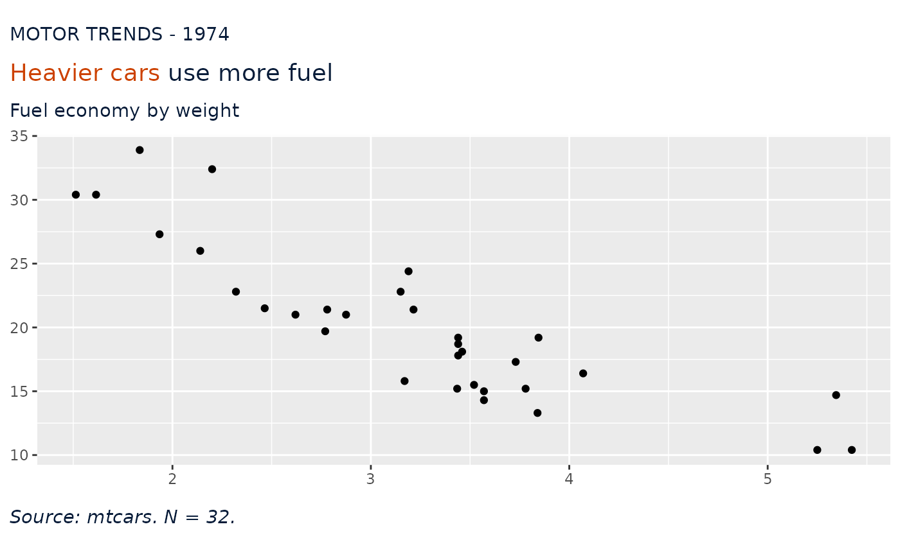

Assembles the standard Omni header (top header / eyebrow, primary finding, measure description, secondary finding, source & N) into a list of ggplot additions. Add it to a plot with `+`. Every element except `primary` is optional - pass `NULL` (the default) to omit it. Text-only and geometry-agnostic; pair with [omni_baseline()] and [omni_highlight_labels()] as needed.
Usage
omni_header(
primary,
keyword = NULL,
top_header = NULL,
measure = NULL,
finding = NULL,
finding_keyword = NULL,
source = NULL,
n = NULL,
color = "orange-red-600",
primary_size = 14,
eyebrow_size = 11,
eyebrow_gap = 0,
eyebrow_color = NULL
)Arguments
- primary
Required. The finding, written as a sentence.
- keyword
Substring of `primary` to color (first occurrence). `NULL` = all navy.
- top_header
Eyebrow line, e.g. `"PROGRAM REACH - FY2024"`. `NULL` = no eyebrow.
- measure
Measure description (subtitle). `NULL` = no subtitle.
- finding
Secondary finding sentence (caption). `NULL` = no secondary line.
- finding_keyword
Leading phrase of `finding` to color + give the stripe.
- source
Data source; rendered as `"Source: <source>."`.
- n
Sample size; rendered as `"N = <n>."`.
- color
The chart's one highlight color name (title keyword + finding keyword/stripe).
- primary_size, eyebrow_size
Font sizes in pt. The document scale is 11/14/18/24 (`Report Template.dotx`), and the defaults put every header element on it: the title at 14 (`OmniHeader3`) and the eyebrow at 11 (`OmniBodyText`), which is also the smallest size the brand allows in a figure. The eyebrow sits at that floor rather than below it because it is the only ALL CAPS element, and uppercase removes the ascender and descender cues readers use to recognise word shapes. The eyebrow defaults to 11, the smallest size the brand allows in a figure. It is set at the floor rather than below it because it is the only ALL CAPS element on the chart, and uppercase removes the ascender and descender cues readers use to recognise word shapes, so it needs more size than mixed-case text for equal legibility.
- eyebrow_gap
Extra space between the eyebrow and the primary finding, in `rem`. Only applies when `top_header` is given. `0` (the default) is as tight as the two lines go - the residual gap at `0` is the fonts' own line boxes, which no margin can shrink. Does not affect the space below the primary finding.
- eyebrow_color
Brand colour name for the eyebrow. `NULL` (the default) uses the title's navy, which is the brand default: every text style in the Word template is `#081C39`. Pass a name to override it without having to re-declare `plot.title`, which silently drops the markdown.
Details
For a comparison header that names two colors instead of one keyword, skip `keyword` and write `primary` yourself with one [omni_span()] per called-out phrase.
`primary` and `top_header` are rendered as marquee markdown, so a brand color name in braces colors a phrase directly - `".plum-600 Housing led the requests"` - which is what [omni_span()] produces.
Spacing
The five elements occupy three ggplot theme slots: the eyebrow and primary finding share `plot.title`, the measure description is `plot.subtitle`, and the secondary finding and source/N share `plot.caption`. The vertical gaps between them are set here to match the brand standard, and are not meant to be adjusted chart by chart - a consistent header rhythm across figures is the point.
`eyebrow_gap` is the one gap deliberately left adjustable, because how close the eyebrow should sit to the finding is a judgement call that varies with how long the finding is. It only adds space; at its default of `0` the two lines are already as close as they go. The gap that remains there is the two fonts' own line boxes - the eyebrow's descender space plus the finding's ascender space - and no margin shrinks it. Negative margins are clamped, and line-height has no effect on it. Reducing `eyebrow_size` is the only thing that closes it further, and it buys very little (10pt to 9pt is about one pixel at 150 dpi), so it is not worth trading a brand type size for.
The measure description and the secondary finding both wrap to the plot width on their own, so there is no need to insert line breaks by hand. Doing so can also break `finding_keyword`: it is matched against `finding` as a fixed string, so a line break falling inside the keyword phrase stops it matching, and the stripe and color are dropped (with a warning).
The remaining gaps can be overridden by adding a `theme()` *after* the header, but note that the visible gap is the margin plus the font's line box, so a margin change does not translate one-for-one into pixels - check the rendered output rather than trusting the number. If you override `plot.title`, it must stay a [marquee::element_marquee()] carrying the title style; replacing it with a plain `element_text()` silently drops the markdown, so the eyebrow, the colored keyword and the text wrapping all disappear at once. The same applies to `plot.subtitle`, which is also a [marquee::element_marquee()].
Spacing *inside* the plotting area - how close the category labels sit to the bars, for instance - is not set here. That is the scale's expansion and the axis text's margin, which belong to the chart code and [theme_omni()]; `omni_header()` is text-only and geometry-agnostic by design.
Axis titles
Both axis titles are cleared (labs(x = NULL, y = NULL)). The brand standard drops
them and the measure description carries what is being measured, so this is what most
charts want.
It does mean a labs() call placed before the header is discarded, with no
error and no warning:
p + labs(y = "Students") + omni_header(...) # dropped
p + omni_header(...) + labs(y = "Students") # keptPut the labs() after the header on the charts that do need an axis title - a count
axis on a histogram, for instance, which the measure description does not describe.
Examples
library(ggplot2)
ggplot(mtcars, aes(wt, mpg)) +
geom_point() +
omni_header(
top_header = "MOTOR TRENDS - 1974",
keyword = "Heavier cars",
primary = "Heavier cars use more fuel",
measure = "Fuel economy by weight",
source = "mtcars",
n = 32
)
